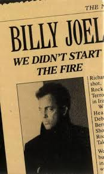

We Didn't Start the Fire

| Artist | Billy Joel |
|---|---|
| Released | September 27th, 1989 |
| Album | Storm Front |
| Genre | Pop Rock |
| Label | Columbia Records |
| Written by | Billy Joel |
| Chart Peak | #1, Billboard Hot 100 |
| Historical Span | 1949-1989 |
| Approximate References | ~120 people and events |
Backgorund and Conception
O"We Didn't Start the Fire" is a pop rock song by Billy Joel, released in September 1989 as the lead single from his album Storm Front. The song consists almost entirely of a rapid-fire catalog of roughly 120 historical events, cultural moments, and public figures from 1949, the year of Joel's birth, through 1989, the year of the song's release. Its central argument is that the chaos and turbulence of the postwar world was not caused by his generation but inherited by them; a world already ablaze when they arrived.
Joel has said the song grew out of a conversation with Sean Lennon, son of John Lennon, in which the younger Lennon expressed a sense of despair about the state of the world. Joel's response was that the world had always been in this state and that every generation inherits its share of catastrophe and crisis. The song was his attempt to make that argument concrete by listing the evidence decade by decade.
Among the events referenced is the Soviet invasion of Afghanistan, compressed into a brief three-word mention alongside dozens of other Cold War flashpoints. The song also implicitly encompasses the spirit of protest and resistance that produced songs like "Ohio" by CSNY. Both are attempts to make sense of history's relentless accumulation of tragedy, though where Young's song burns with specific rage, Joel's adopts the stance of an exhausted witness surveying the entire postwar landscape at once.
Composition
The compositional approach was unusual for Joel. He started with the list rather than the music, assembling events year by year from 1949 forward and then setting them to a propulsive, repetitive chord progression that gives the song its relentless momentum. The vocal melody is deliberately syllabic and speech-like, designed to carry as many words as possible without obscuring their meaning. The verses are dense, sometimes containing six or seven distinct references in a single line, and the song demands an attentive listener to catch all of them.
The production, handled by Joel and co-producer Mick Jones, is clean and energetic, designed to carry the weight of the lyric without overwhelming it. The chorus, repeated throughout, is the only moment of relative simplicity in the song, a brief exhale between the dense accumulation of verses.
"We didn't start the fire / It was always burning since the world's been turning." — Chorus, Billy Joel, 1989
Historical References
The song's references span forty years of postwar history, organized loosely by year. They include:
- Political crises: Suez Canal, the Hungarian uprising, the Bay of Pigs, Watergate, Ayatollah Khomeini
- Wars and conflicts: Korea, Vietnam, the Middle East, and the Soviet invasion of Afghanistan
- Cultural milestones: Rock and roll, television, Marilyn Monroe, James Dean, Hula Hoops, the Beatles
- Space race: Sputnik, astronauts, the moon landing
- Assassinations and deaths: JFK, Malcolm X, the general theme of political violence
- Social upheaval: The civil rights movement, counterculture, various scandals
Reception
The song reached number one on the Billboard Hot 100 and became one of Joel's signature songs. Critical response was divided. Some reviewers found the song genuinely innovative, a form of compression that forced the listener to confront just how much had happened in forty years. Others found it shallow, arguing that a list is not an argument and that the song's rapid-fire delivery prevented any individual event from receiving the weight it deserved.
The accompanying music video, which depicted vignettes from each era of the song, became one of the most-viewed videos on early MTV. The song's visual approach helped make it a popular educational tool, and its structure made it unusually easy to use as a jumping-off point for history lessons.
Legacy
The song has had an unusual afterlife as an educational tool. Teachers have used it as an entry point for lessons in postwar history for decades. It has been updated, parodied, and referenced countless times since its release. Its central conceit, the unbroken continuity of historical crisis, has aged in complex ways, as successive generations have found themselves wanting to add their own events to the list.
In broader discussions of music and history, "We Didn't Start the Fire" sits at an interesting intersection. It is not a protest song in the tradition of "Ohio" or "The Wreck of the Edmund Fitzgerald" — it does not advocate a position or mourn a specific loss. It is instead a panoramic argument about historical continuity, using the technique of accumulation to make its point.